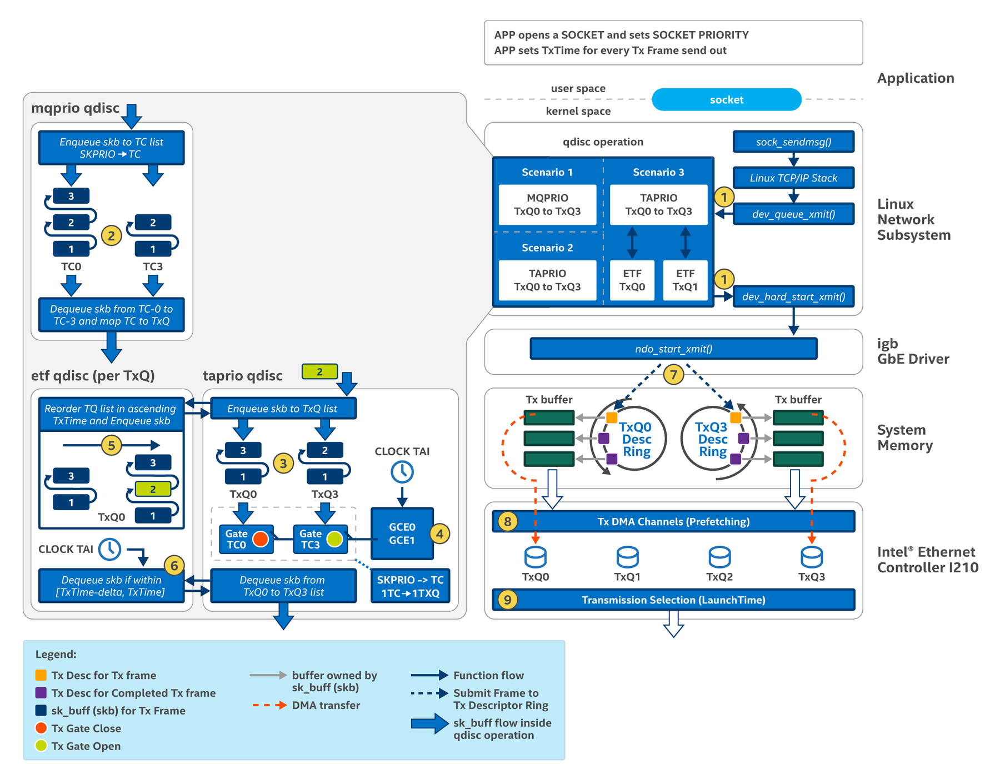

This section describes the transmit data path from the user-space through the Linux network subsystem, Ethernet driver, and Intel® Ethernet Controller I210.
The following steps describe how an application sends a time sensitive packet, covering only the functions related to TSN technologies:
socket(AF_PACKET, SOCK_RAW, IPPROTO_RAW);
setsockopt(fd, SOL_SOCKET, SO_PRIORITY, &priority, sizeof(priority));
sk_txtime.clockid = CLOCK_TAI; sk_txtime.flags = report_error | deadline_mode;
struct msghdr msg; // struct cmsghdr *cmsg; struct iovec iov; iov.iov_base = rawpktbuf; // the transmit packet iov.iov_len = sizeof(rawpktbuf); // the size of the transmit packet msg.msg_iov = &iov; // internal scatter/gather array for transmit packet cmsg = CMSG_FIRSTHDR(&msg); // obtain the control message cmsg->cmsg_level = SOL_SOCKET; // Set to socket level cmsg->cmsg_type = SCM_TXTIME; // Set ancillary data is TXTIME socket control message type cmsg->cmsg_len = CMSG_LEN(sizeof(__u64)); *((__u64 *) CMSG_DATA(cmsg)) = txtime; // Set per-packet transmit time sendmsg(fd, &msg, 0); // Send message (payload and control message that contains TxTime)
For additional details, refer to the socket interface in the Linux networking subsystem.

As shown above, a transmit packet that enters the kernel from the socket API such as sendmsg() traverses through a series of transmit functions such as sock_sendmsg(), tcp_sendmsg(), ip_queue_xmit() and others. Once a transmit packet has been copied into the data buffer in the kernel, the kernel processes and passes it using the associated sk_buff structure without copying data. This description references the IEEE 802.1Qbv Demo 3 Scenario 3 Time-Aware Traffic Scheduling and LaunchTime Enabled configuration setup. Refer to the table below for a detailed understanding of each action.
If a user configures a qdisc, the
sk_buff is enqueued into the qdisc operation before the
sk_buff is handled to the Ethernet driver. The qdisc shapes or reorders the transmit packet so the right
sk_buff is dequeued for transmission by the Ethernet driver. The qdisc operation does not involve data copy since it operates on a linked-list of
sk_buff entries. As shown,
|
|
| For the MQPRIO qdisc, internally, the qdisc has a per Traffic Class (TC) linked-list. MQPRIO supports a maximum of 8 TCs.
For the enqueue operation of sk_buff, the MQPRIO qdisc looks up the socket priority of the sk_buff in the 'socket priority to TC' map and determines the correct TC linked-list to be added in a FIFO manner. For the dequeue operation of sk_buff, the MQPRIO qdisc picks sk_buff from the linked-list of TC-0, then TC-1, TC-2, and TC-3. TC-0 has the highest priority in transmit selection (for dequeuing). Whenever a sk_buff is dequeued, the destination TxQ is looked up in the "TC to TxQ" map. Both sk_buff and the associated TxQ info are passed (inside dev_hard_start_xmit( )) to the Ethernet driver. As marked in 7, dev_hard_start_xmit( ) calls the ndo_start_xmit() callback function of the Ethernet driver. For Intel® Ethernet Controller I210, ndo_start_xmit() is igb_xmit_frame(). |
|
| The TAPRIO qdisc has an internal per TxQ linked-list. If a TxQ linked-list is NOT attached with an ETF qdisc, then the
sk_buff is added to the TxQ linked-list in a FIFO order. The
sk_buff stores information of which TxQ to be added.
Consequently, TAPRIO and MQPRIO qdisc look very similar; both are multiple linked-lists. However, MQPRIO uses TC to categorize sk_buff into linked-lists while TAPRIO uses TxQ. |
|
| The TAPRIO qdisc implements the Time Aware Shaper software implementation that is similar to that defined in IEEE 802.1Qbv.
Like MQPRIO, TAPRIO looks up the socket priority of a sk_buff in "socket priority to TC" map to get the TC. The TAPRIO qdisc is designed so that one TC is mapped to one TxQ. Each of the TxQ linked-lists is associated with a virtual transmission gate, which opens/closes according to the programmed Tx schedule. In IEEE 802.1Qbv, the Tx schedule is called the Gate Control List. When the virtual transmission gate associated with the TxQ linked-list opens, if a sk_buff is available, the sk_buff is dequeued. Both sk_buff and the associated TxQ info are passed (inside dev_hard_start_xmit( )) to the Ethernet driver. The TAPRIO dequeue operation goes from TxQ0 to TxQ1 to TxQ2 to TxQ3 linked-list; TxQ0 has the highest priority in terms of dequeue transmit selection. |
|
| Both MQPRIO and TAPRIO qdisc are root qdiscs. One or more of the internal linked-lists can be attached with another qdisc such as CBS or ETF qdisc. That is, ETF is per TxQ in both MQPRIO and TAPRIO while MQPRIO uses the TC linked-list.
The ETF qdisc ensures the sk_buff tracked in the linked-list is in the right chronological order, based on the per-packet transmit time, and passed through cmsg's ancillary data (SCM_TXTIME). In Scenario 3 above, when a new sk_buff (marked as green rectangle 2) intended for TxQ0 enters TAPRIO qdisc, the sk_buff is passed to ETF qdisc for reordering in the TAPRIO enqueue operation. The order of the sk_buffs in TAPRIO TxQ linked-list is always in ascending order. |
|
| In the ETF dequeue operation, the ETF qdisc ensures that the transmit time (TxTime) of a sk_buff is within a legitimate range (between "TxTime - delta" and "TxTime"). It confirms that the packet's transmit time has not expired and it is not too far out (less than "delta" offset from the packet transmit time). If the transmit time condition is met, the sk_buff is dequeued.
Since ETF qdisc is per TxQ, both sk_buff and the associated TxQ info are passed (inside dev_hard_start_xmit( )) to the Ethernet driver. In Scenario 3, the offload mode of the ETF qdisc is enabled and two ETF qdiscs are attached to the TAPRIO qdisc: TxQ0 and TxQ1 linked-list. This configuration corresponds to the two hardware transmit queues (TxQ0 and TxQ1) in Intel® Ethernet Controller I210 that has the capabilities to pre-fetch packets into the controller transmit queue from system memory before the transmit time of the packet (that is, LaunchTime). |
|
| To transmit a packet from the Ethernet controller, the Linux network subsystem uses
dev_hard_start_xmit( ) calls for the registered transmit callback function (ndo_start_xmit()) of the Ethernet driver.
For the Intel® Ethernet Controller I210, the transmit callback function is igb_xmit_frame(). In the Ethernet driver, the address and length of a transmit packet is written to an available Tx Descriptor entry associated with the TxQ. The Ethernet driver sets other transmit descriptor options, such as transmit time. Finally, the Ethernet driver updates the registers of the Ethernet controller to inform the controller about the newly committed Tx descriptor entries. |
|
| Tx descriptor entries written to the Tx descriptor ring are read by the Ethernet controller by a direct memory access transfer. Four Tx descriptor rings are used for transmit packet transfer between the Ethernet driver (igb) and the Intel® Ethernet Controller I210. The TxQ0 and TxQ1 in Intel® Ethernet Controller I210 can pre-fetch transmit packets into the controller TxQ from system memory before the transmit time of the packet (that is, LaunchTime). | |
| The transmission selection logic inside the Intel® Ethernet Controller I210 selects the transmit packet that is available first in TxQ0, then TxQ1, then TxQ2, and finally TxQ3. That is, TxQ0 has the highest priority and TxQ3 has the lowest priority.
For a transmit packet that has transmit time set (that is, set in the LaunchTime field of the Tx descriptor entry), transmission selection logic starts the transmission of the transmit packet (pre-fetched earlier into TxQ) when the network time is the same as the specified transmit time of the packet. |
Refer to Queue Disciplines for details on qdisc.